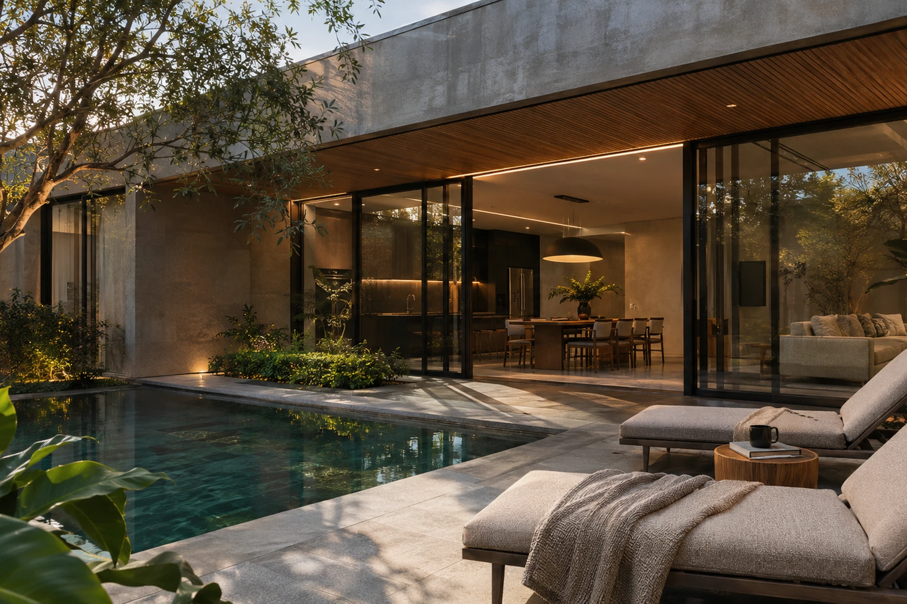
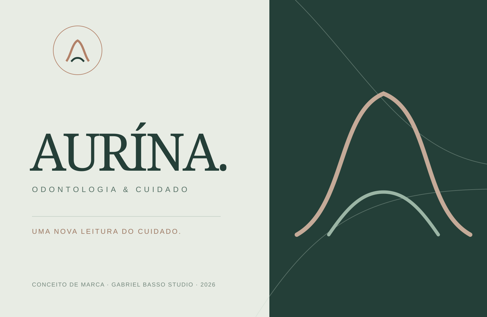
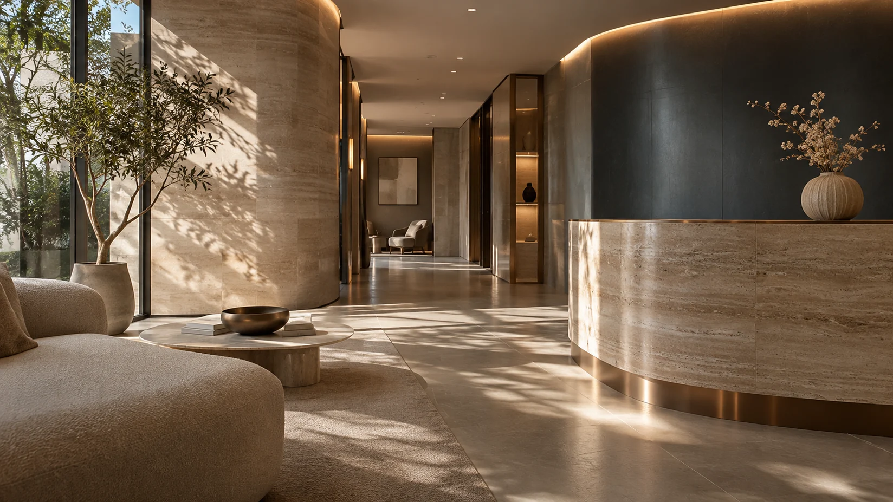
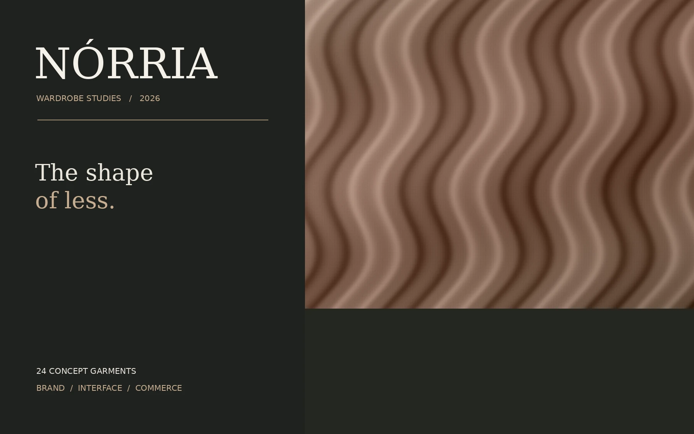

GB / WORKS 01VIEW PROJECTGABRIEL BASSO / INDEPENDENT STUDIO
PORTFOLIO · 2026 EDITION
WEB DESIGN · BRAND DESIGN · UI/UX
Design thatbuildsrecognition.
I’m Gabriel Basso. I create brand identities and websites that help businesses present their services clearly, guide visitors and make it easier to start a conversation. Visual direction and usability shape every decision.
GABRIEL BASSOGB—001
WEB DESIGNER©26
SCROLL TO EXPLORE WEB DESIGN / BRAND DESIGN / UI·UX01 / 05
01 / SELECTED WORKFour brands.
Four brands.
Four distinct journeys.
Four fully explorable concept projects. Each shows a different business challenge—from finding a property to planning a consultation or exploring a product catalog. These are fictional brands, not client commissions.
CONCEPT STUDIES / 2026
GB / WORKS 02VIEW PROJECT
GB / WORKS 03VIEW PROJECT
GB / WORKS 04VIEW PROJECTQUICK GUIDE / WHAT EACH PROJECT SHOWS
Explore by experience.
Switch between projects to see the kind of solution each one demonstrates.
GB / 01 — 04ESTARÉLIA
REAL ESTATE / DIGITAL PLATFORM
ESTARÉLIA
A concept catalog of 18 properties with filters, comparisons, favorites and a demonstration visit-request flow.
Fictional brands and businesses. Properties, professionals, consultations and purchases are for demonstration only.
A LITTLE ABOUT MY POINT OF VIEW
A brand should
stand out.
A website should
make things easier.
A strong visual identity makes a first impression; clear content and useful interactions help people understand what to do next.
Explore my approachGABRIEL BASSO / PORTRAIT 02
02 / BEHIND THE WORKHello,
Hello,
I’m Gabriel.
I work across brand identity, website design and user experience. I look at the full journey: what a visitor needs to understand, how information should be organized and how the interface supports each step.
I enjoy work where aesthetics have a reason to exist. From the content structure to the movement of a button, I look for a balance between character and usability.
STRATEGY · AESTHETICS · EXPERIENCE
03 / WHAT I DOClear identity.
Clear identity.
Considered experiences.
Three complementary disciplines, with one goal: a cohesive digital experience from identity to interaction.
/01
Web Design
Business websites, landing pages, online stores and redesigns created to communicate clearly and work beautifully on every screen.
WEBSITES / LANDING PAGES/02
Brand Design
Visual identity, art direction, typography and brand systems that create coherence and a recognizable presence.
IDENTITY / ART DIRECTION/03
UI/UX Design
Information architecture, navigation and flows that make complex decisions feel intuitive.
EXPERIENCE / INTERFACE04 / HOW I WORKFrom first brief
From first brief
to the final review.
A suggested process that adapts to each project’s size, content and actual needs.
- 01
Discovery
Understand the context
- 02
Research
Explore references
- 03
Strategy
Set priorities
- 04
Identity
Define the language
- 05
UI/UX
Map the experience
- 06
Development
Build the interface
- 07
Testing
Review and refine
- 08
Delivery
Launch and document
05 / LET’S TALKTell me about
Tell me about
your next project.
Tell me what you are building, who it is for and what you need the website to do. I’ll read your brief and we can explore the next step.